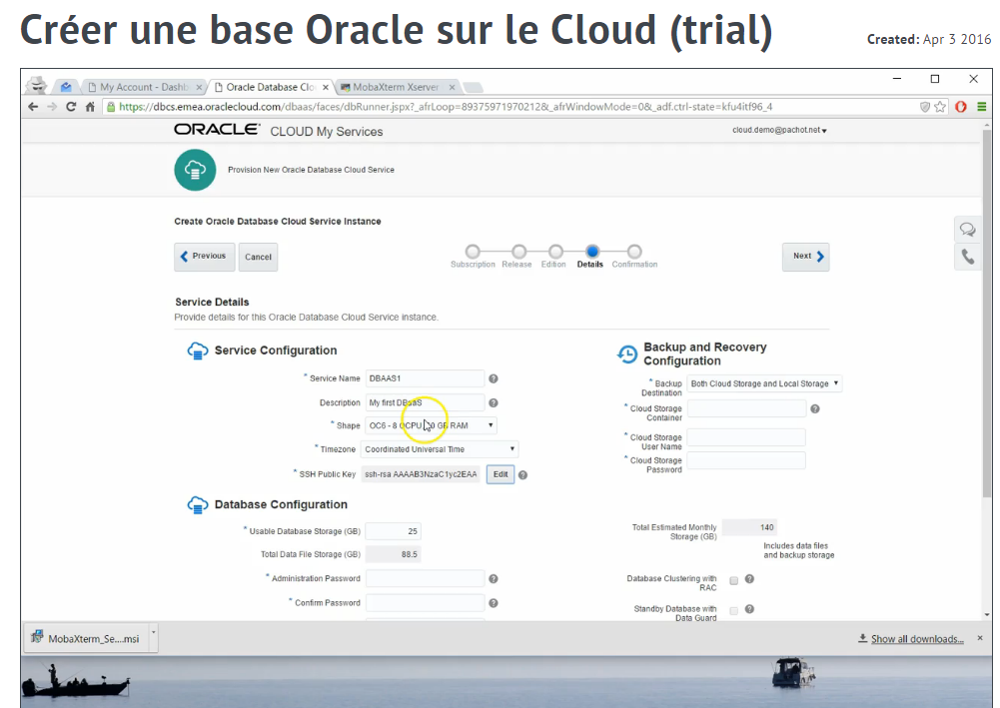

|
|
This was first published on https://blog.dbi-services.com/creer-une-base-oracle-sur-le-cloud-en-quelques-clicks (2016-04-03)
Republishing here for new followers. The content is related to the the versions available at the publication date
Il n’a jamais été aussi facile de créer une base Oracle. Et ceci grâce au Database as a Service (DBaaS). C’est l’occasion de tester le cloud: Oracle Cloud Service offre une version d’essai de un mois. Si vous êtes proches de Genève, passez nous voir lors du SITB les 26-27 avril: http://www.dbi-services.com/fr/events-fr/swiss-it-business-sitb-du-26-au-27-avril-2016/ Mais j’ai aussi fait une video pour montrer comment créer sa base sur le Cloud de A à Z. Le seul prérequis est d’avoir une adresse e-mail et un navigateur web. Yous allez voir comment:
La vidéo fait 12 minutes. Il faut compter une heure de break pour la souscription au service (la demande est validée, et on reçoit un e-mail quand c’est fait). La création du service DBaaS où tout est fait automatiquement (création et démarrage de la VM, installation d’Oracle, création de la CDB, de la PDB) prend environ une heure.
La video est sur Screencast-O-matic: http://screencast-o-matic.com/u/nTb6/dbaas 
C’est l’occasion de tester le Cloud. Vous allez être fan. Une base avec une config décente accessible de partout. Mais aussi de tester le multitenant. Vous avez toutes options sur cette version trial, alors regardez les facilités apportées par les pluggable database (‘bases enfichables’ pour ceux qui n’aiment pas que j’utilise les mots anglais pour les termes techniques).
C’était aussi pour moi l’occasion de tester Screencast-O-matic Pro Recorder, que je trouve excellent. C’est ma première video, alors j’attends vos commentaires.